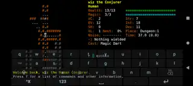
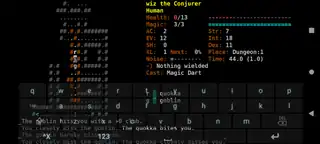

Dungeon Crawl: Stone Soup for Android
ألعاب
An unofficial port of the classic roguelike Dungeon Crawl: Stone Soup for Android. This is the ASCII version. Can you retrieve the Orb of Zot? Probably not! ------------------------------------------------ Looking for the tiles version? The official tiles version (not made by me) can be downloaded f
✓ ترخيص مفتوح (GPL-2.0-or-later) · آخر تحديث: 2023-10-10
0.29.1bالإصدار
29.8 MBالحجم
GPL-2.0-or-laterالرخصة
Open in Kanzتحميل APK (29.8 MB)
Download APK
SHA-256: b6219b733bdf20bf44bc5b7a06dd57501947e56cf9f73935a9ba5f44dc6e1aa2


امسح الكود لفتح صفحة التطبيق
Scan to open this app page
لو كنز مش متثبت عندك: نزّل متجر كنز.
Not installed? Get the Kanz store.